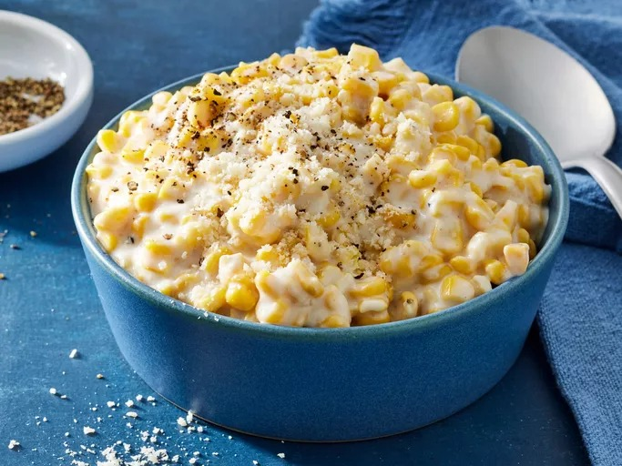
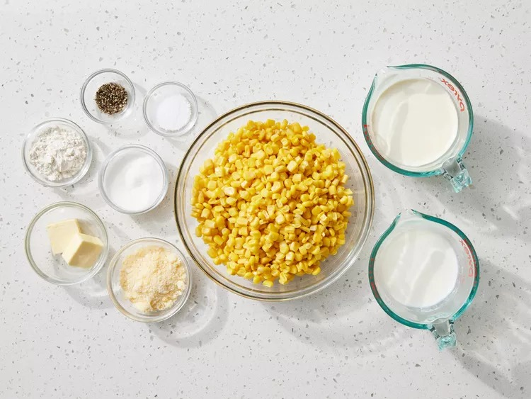
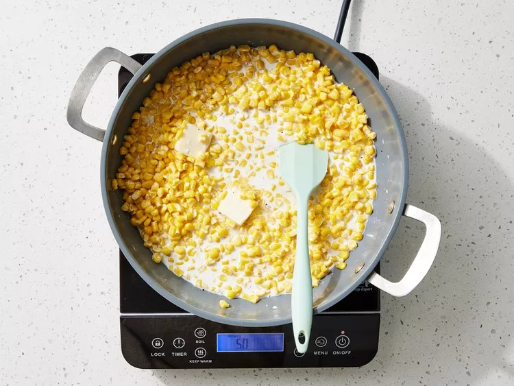
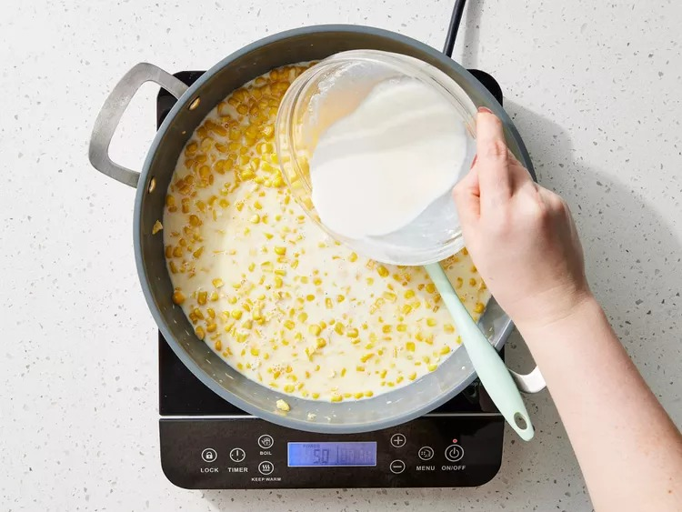

Home
Creamed Corn

Description
Creamed corn made from scratch is so much better than anything you'll find in a can.
Ingredients
- 10 ounces of frozen corn kernels, thawed
- 1 cup heavy cream
- 1 teaspoon salt, or to taste
- 2 tablespoons granulated sugar
- 1/4 teaspoon freshly ground black pepper, or to taste
- 2 tablespoons butter
- 1/2 cup whole milk
- 2 tablespoons all-purpose flour
- 1/4 cup freshly grated Parmesan cheese, or to taste
Steps
- Gather all ingredients

- Combine corn, heavy cream, sugar, butter, salt, and black pepper in a skillet over medium heat. Cook, stirring occasionally, until butter has melted, 3 to 5 minutes.

- Meanwhile, whisk milk and flour together in a small bowl until smooth.

- Add milk mixture to the skillet and continue to cook, stirring constantly, until sauce is thickened and corn is cooked through, about 4 minutes.

- Remove from heat, and stir in Parmesan cheese until melted. Serve hot.